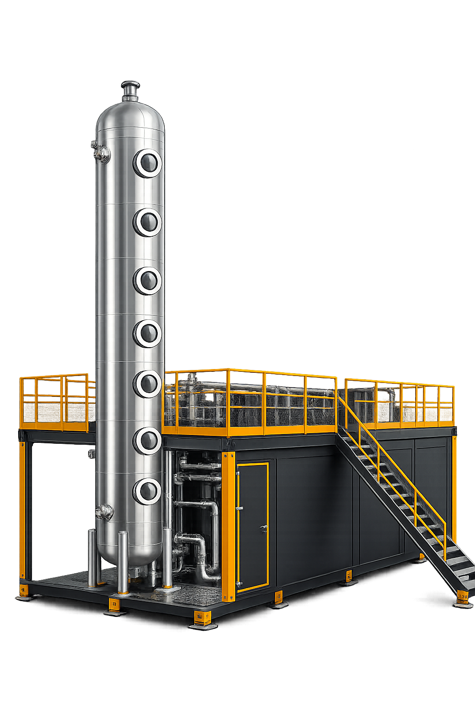

El upgrading separa el CO₂ y otras impurezas del biogás para llevar la fracción de metano a niveles equivalentes al gas natural convencional. Es el paso técnico que convierte un gas de proceso en un combustible comercializable.

Tres etapas en bucle continuo. Una vez calibrado, el sistema mantiene calidad de salida estable con consumo de químicos reducido.
~60 % CH₄, ~20 % CO₂ + trazas (H₂S, H₂O).
El aminas captura CO₂ y H₂S; el CH₄ continúa hacia salida.
El solvente cargado libera impurezas por calentamiento y se reutiliza.
CH₄ ≥ 97 %, listo para uso o comercialización.
Frente a otras tecnologías de upgrading, la absorción química con regeneración en ciclo cerrado ofrece eficiencia de separación elevada con química estable.
Si hay demanda local de gas natural, el upgrading puede ser económicamente atractivo. Lo evaluamos contigo.